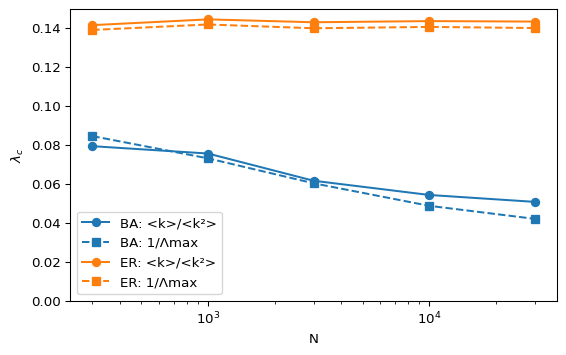

BA HMF: [0.079 0.076 0.062 0.054 0.051]
ER HMF: [0.141 0.144 0.143 0.143 0.143]Module 5: Complex Networks
In the well-mixed SIS model of Compartmental Models, an infection persists only if \(R_0 > 1\). On a network, the corresponding condition depends on the degree distribution. This page derives it and states exactly when the threshold vanishes.
Use the continuous-time SIS model: each S-I edge transmits at rate \(\beta\) and each infected node recovers at rate \(\mu\). The spreading rate is \(\lambda = \beta/\mu\). In the discrete-time simulations of SIS Simulation, \(\lambda \approx \beta/\mu\) when both probabilities are small.
If every node had exactly \(\langle k \rangle\) neighbours, the infected density \(\rho\) would obey \(\dot\rho = -\rho + \lambda\langle k \rangle \rho(1-\rho)\) (time in units of \(1/\mu\)). The threshold is \(\lambda_c = 1/\langle k \rangle\) (Pastor-Satorras et al. 2015).
Now group nodes by degree. Let \(\rho_k\) be the fraction of infected nodes among nodes of degree \(k\). Assume an uncorrelated network: an edge leads to a node of degree \(k'\) with probability \(k' p_{k'}/\langle k \rangle\). Then (pastor2001epidemic?; Pastor-Satorras et al. 2015)
\[ \frac{d\rho_k}{dt} = -\rho_k + \lambda k (1 - \rho_k)\,\Theta, \qquad \Theta = \frac{1}{\langle k \rangle}\sum_{k'} k' p_{k'} \rho_{k'} . \]
Linearize around \(\rho_k = 0\). Multiply by \(k p_k / \langle k \rangle\) and sum over \(k\): \(\dot\Theta = \left(\lambda \langle k^2 \rangle / \langle k \rangle - 1\right)\Theta\). The disease-free state becomes unstable when
\[ \lambda > \lambda_c = \frac{\langle k \rangle}{\langle k^2 \rangle}. \]
For a Poisson degree distribution, \(\langle k^2 \rangle = \langle k \rangle^2 + \langle k \rangle\) and \(\lambda_c = 1/(\langle k \rangle + 1)\), close to the homogeneous result. For SIR the analogous result is a critical transmissibility \(T_c = \langle k \rangle / (\langle k^2 \rangle - \langle k \rangle)\) (newman2002spread?).
For a scale-free distribution \(p_k \sim k^{-\gamma}\) with \(2 < \gamma \le 3\), \(\langle k^2 \rangle\) diverges as \(N \to \infty\), so \(\lambda_c \to 0\) (pastor2001epidemic?). Read this result with its assumptions:
?@fig-threshold-N computes both predictions on generated graphs.

BA HMF: [0.079 0.076 0.062 0.054 0.051]
ER HMF: [0.141 0.144 0.143 0.143 0.143]For the ER graphs the threshold stays near \(1/(\langle k \rangle + 1) = 1/7 \approx 0.14\). For the BA graphs it decreases slowly with \(N\) but stays well above zero at every size you can simulate.
A BA network with \(m = 3\) has \(N = 10^9\) nodes. Estimate \(\lambda_c\) from the heterogeneous mean-field formula. Compare it with an ER graph with the same mean degree.
\(\lambda_c \approx 2/\big((m+1)\ln N\big) = 2/(4 \times 20.7) \approx 0.024\). The ER graph gives \(\lambda_c = 1/(\langle k \rangle + 1) = 1/7 \approx 0.14\) at any size. Even for a network the size of a large country the BA threshold is small but clearly positive.
Use amlab.networks_spreading.run_sis_fast on a BA graph with \(N = 2000\). Fix \(\mu = 0.05\), vary \(\beta\), and plot the long-time prevalence against \(\lambda = \beta/\mu\). Locate the value of \(\lambda\) where the prevalence leaves zero and compare it with both predictions.
Start from 50 infected nodes, run 1000 steps and average the last 200 steps over 3 runs.
import matplotlib.pyplot as plt
import networkx as nx
import numpy as np
from amlab.networks_spreading import run_sis_fast
rng = np.random.default_rng(7)
G = nx.barabasi_albert_graph(2000, 3, seed=7)
mu = 0.05
lams = np.linspace(0.02, 0.2, 10)
prevalence = [
np.mean([run_sis_fast(G, lam * mu, mu, steps=1000, initial_infected=50, rng=rng)[-200:].mean() for _ in range(3)])
for lam in lams
]
k = np.array([d for _, d in G.degree()], dtype=float)
plt.plot(lams, prevalence, "o-")
plt.axvline(k.mean() / (k**2).mean(), color="grey", ls=":", label="<k>/<k²>")
plt.xlabel(r"$\lambda = \beta/\mu$")
plt.ylabel("long-time prevalence")
plt.legend()
plt.show()For this graph both predictions give \(\lambda_c \approx 0.059\). The simulated prevalence is still zero at \(\lambda = 0.08\) and becomes positive between \(0.08\) and \(0.10\). The mean-field theories ignore dynamical correlations: a newly infected node cannot pass the infection back to the neighbour that infected it while that neighbour is still infected, so part of the infection attempts are wasted and the true threshold is higher. On a finite graph, fluctuations also end outbreaks that are just above threshold within the simulated time.